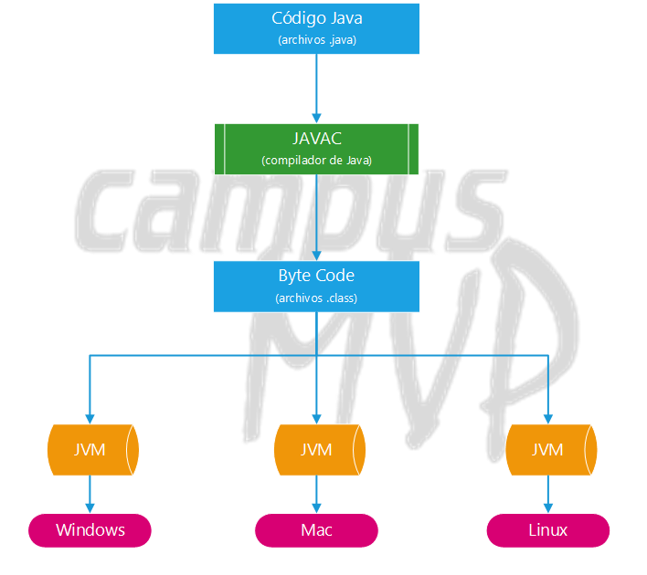
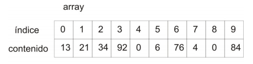
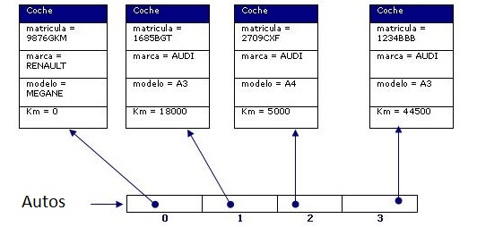

Programación 1

Brandon Larrosa / Correo: brandonlarrosa@anima.edu.uy
Unidades
Unidad 1
Que es un programa?
¿Qué es un programa?
Instrucciones de computación estructuradas y ordenadas que al ejecutarse hacen que una computadora realice una función particular
Lenguaje de Programación
Un lenguaje de programación es una técnica estándar de comunicación que permite expresar las instrucciones que han de ser ejecutadas en una computadora. Consiste en un conjunto de reglas sintácticas y semánticas que definen un programa informático
- Sintaxis estricta
- Es importante respetar las reglas sintácticas del lenguaje
Lenguaje de Programación
Su estructura y el significado de sus elementos y expresiones está formado por:
- Conjunto de símbolos.
- Reglas sintácticas.
- Reglas semánticas.
Clasificación de Lenguajes de Programación
- Primer nivel. : Lenguaje maquina
- Segundo nivel.: Lenguaje ensamblador
- Tercer nivel.: Lenguajes de alto nivel
- Cuarto nivel. : Lenguajes de cuarta generación
Licencias
Una Licencia de Software es la autorización o permiso concedida por el autor para utilizar su obra de una forma convenida habiendo marcado unos límites y derechos respecto a su uso..
Licencias
- Software privado: se refiere a cualquier programa informático en el que los usuarios tienen limitadas las posibilidades de usarlo, modificarlo o redistribuirlo
- Freeware: es un software de computadora que se distribuye sin cargo
- Shareware es una modalidad de distribución de software (juegos o programas) para que el mismo pueda ser evaluado de forma gratuita, pero generalmente por un tiempo especificado.
- Software Libre: es el aquel que, una vez obtenido, puede ser usado, copiado, estudiado, modificado y redistribuido libremente.
Licencias
¿Por qué son importantes?
- Para no infringir los derechos de autor.
- Para poder recibir soporte y actualizaciones por parte del fabricante del software.
- Para proteger nuestro trabajo.
Unidad 2
Algoritmos y programación estructurada
Algoritmos

Algoritmos
Son un conjunto de instrucciones bien definidas, ordenadas y lo más concretas posible que permiten realizar una actividad mediante pasos sucesivos a cualquier persona que siga esos pasos
Algoritmos

- Tenemos que conocer la entrada
- Para poder realizar el proceso
- Para dar a la salida el resultado
Proceso de Programación
- Antes de empezar a programar debemos tener en cuenta:
Pseudocódigo
- Herramienta que permite pasar las ideas al papel, en español y siguiendo unas pocas reglas sintácticas.
- Es una descripcion de muy alto nivel de un algoritmo
- Se usa porque es una excelente forma de transmitir lo que hace un algoritmo
- Se escribe en lenguaje humano
Pseudocódigo
Sintaxis
- Leer nombre_variable (del Usuario)
- Escribir "mensaje" (en Pantalla)
- Definir nombre_de_variable
Pseudocódigo
Tipos de estructuras
- Selectivas (o condicionales)
- Si
- Si/Sino
- Bucles o repetitivas
- Mientras
Diagramas de flujo
- Es una representacion gráfica de un algoritmo
- Utiliza simbolos que representan los pasos
- Puede utilizarse en lugar del pseudocódigo
Diagramas de flujo
Simbolos

Diagramas de flujo
- Empieza y termina con Ovalos
- El flujo se marca por las flechas conectoras
Unidad 3
Introducción a la programación
JAVA
¿Que es?
- Es un lenguaje de programación y una plataforma informática
Java - Lenguaje de programación
- compilado
- multiplataforma
- seguro
- orientado a objetos
Objetos
Clase
El lenguaje se basa en pensar que hay en el mundo real objetos y esos objetos tienen un tipo, o clase. Por ello el lenguaje se basa en clases, que describen como son los objetos.
Sintaxis
Clase
public class NombreDeClase{
}
JVM
JVM
- Cuando compilas una aplicación escrita en lenguaje Java, en realidad éste no se compila a lenguaje máquina, directamente entendible por el sistema operativo, sino a un lenguaje intermedio denominado Byte Code.
- Entre el Byte Code y el sistema operativo se coloca un componente especial llamado Máquina virtual que es el que realmente va a ejecutar el código.
- La Java Virtual Machine o JVM toma el código Byte Code resultante de compilar tu aplicación y lo compila a su vez a código nativo del SO en el que se está ejecutando.
Primer programa en JAVA
Hola Mundo
public class Hola_Mundo {
public static void main(String[] args) {
System.out.println("Hola Mundo");
}
}
Unidad 4
Conceptos de programación
Variable
- Las variables son espacios reservados en la memoria que se utilizan para guardar información,pueden cambiar de contenido a lo largo de la ejecución de un programa.
- el nombre de la variable debe ser mnemotécnico, es decir que debe reflejar el uso dentro del programa de la misma.
Variable

Tipos de datos
- Integer (int): Representa a los numeros enteros
- Boolean (bool): Pueden tomar unicamente los valores True o False
- Character (char): Representan cualquier caracter. Ej: Letras
- String (str): Es una cadena de caracteres Ej: palabras u oraciones
¿Cómo declarar una variable?
public class Nombre_clase {
public static void main(String[] args) {
Tipo_de_dato nombre_de_variable;
}
}
¿Cómo asignar un valor a una variable?
public class Nombre_clase {
public static void main(String[] args) {
Tipo_de_dato nombre_de_variable;
nombre_de_variable= valor_de_ejemplo;
}
}
Estructuras de control
IF
if (condicion) {
intruccion 1;
intruccion 2;
}else{
intruccion 1;
intruccion 2;
}
Evalua que se cumpla una condición, en el caso que sea true ejecuta las instrucciones correspondientes a verdadero
en el caso que sea false ejecuta las instrucciones correspondientes al falso
Estructuras de control
For
for (inicializacion; terminacion; incremento) {
instrucciones()
}
Ejecuta las instrucciones hasta que se cumpla la regla de "terminacion", va incrementando según lo indicado en "incremento"
For - Ejemplo
for(int i=1; i < 11; i++){
System.out.println("Numero: " + i);
}
Estructuras de control
While
while (condicion) {
instrucciones()
}
Ejecuta las instrucciones mientras se cumpla la condicion
While - Ejemplo
while(i<11){
System.out.println("Numero: " + i);
i++;
}
Estructuras de datos
Array
- Es una estructura que representa un vector o un arreglo
- Permite almacenar una cantidad de datos
- Los datos son accesibles por la posicion que ocupan.
"Es una matriz de una sola fila"
Array - Crear
//Declaración de Array
String alumnos[] = {"Avila","Burgos"};
En este caso no hace falta que indiquemos el número de elementos, sino que el tamaño se calculará dependiendo de los elementos que pongamos entre las llaves
Array - Crear
//Declaración de Array
String alumnos[] = new String[9]; //Array del 0 al 8
//Agregando alumnos
alumnos[0] = "Avila";
alumnos[1] = "Burgos";
alumnos[2] = "León";
Debemos de indicar la cantidad de elementos, es más util a la hora de saber la cantidad de elementos pero no saber cuales elementos van
Array - Recorrer
for (int x=0; x menor que arreglo.lenght; x++){
System.out.println(miArray[x]);
}
Array - Listar elemento dado
System.out.println(miArray[posicion]);

Estructuras de datos
Listas
- Las listas permiten almacenar grandes cantidades de datos.
- Son similares a los Array
- No es preciso fijar un tamaño límite
Listas - Crear
//Declaración de lista
List< String> redesSociales = new ArrayList< String>();
//Agregando datos
redesSociales.add("Facebook");
redesSociales.add("Instagram");
redesSociales.add("Twitter");
redesSociales.add("Snapchat");
Listas - Recorrer
for (int i = 0; i < redesSociales.size(); i++) {
System.out.println(redesSociales.get(i));
}
Listas - Recorrer
//String temp es un objeto de la lista
for (String temp : redesSociales) {
System.out.println(temp);
}
Listas - Recorrer
Iterator< String> redesSociales = redesSociales.iterator();
while (redesSociales.hasNext()) {
System.out.println(redesSociales.next());
}
Clases - Constructor
- Se ejecutan al crear la clase
- Se llaman igual que la clase
- No tienen tipo de retorno
Clases - Constructor
public class Persona {
private String nombre;
private int edad;
public Persona() {
edad = 18;
}
public Persona(String nombre, int edad) {
edad = 18;
}
}
Clases - Método
- Es una "función"
- Tiene un nombre, tipo de retorno, parámetros y el código que ejecuta
Función
- Es un bloque de codigo diseñado para realizar una actividad particular
- Son ejecutadas cuando alguien las invoca
- Deben tener un nombre
- Pueden o no contener parámetros
- Pueden o no retornar un valor
Clases - this
- Es una palabra reservada
- Se utiliza en los metodos o contructores
- Es una referencia al objeto actual
Clases - Constructor - this
public class Persona {
private String nombre;
private int edad;
public Persona(String nombre, int edad) {
this.nombre = nombre;
this.edad = edad;
}
}
Clases - Getters & Setters
Son metodos de acceso, por lo que siempre deben ser declarados publicos
Clases - Setters
- Del Inglés "Set", que significa establecer
- Sirve para asignar un valor a un atributo
- No retorna nada, por lo cual siempre debe ser void
Clases - Getter
- Del Inglés "Get", que significa obtener
- Sirve para obtener (recuperar o acceder) el valor ya asignado a un atributo
- El valor de retorno depende del tipo del atributo
- No utiliza parametros
Clases - toString()
- Se utiliza para mostrar la informacion relevante del objeto
- Siempre retorna un String
Listas de objetos
Coches auto = new Coches();//creamos el objeto auto
//Se crea un ArrayList para guardar objetos de tipo Coches.
ArrayList autos = new ArrayList();
autos.add(auto);//almacenamos el auto en la lista

String - Comparar Cadenas
Con ==
String cadena1 = "Hola";
String cadena2 = "Hola";
if (cadena1 == cadena2)
{
...
}
Con método equals
String cadena1 = new String("Hola");
String cadena2 = new String("Hola");
if (cadena1.equals(cadena2))
{
...
}
String - Extraer subcadenas
Con substring
String sCadena = "Hola Mundo";
String sSubCadena = sCadena.substring(5,10);
System.out.println(sSubCadena);
- Los parámetros que le pasamos indican el indice inicial y final de la cadena que queramos extraer.
- Sel final por la letra que está justo después de la última letra que queramos recuperar.
- Una cosa muy importante es que la primera letra de una cadena de texto siempre tiene el índice 0.
String - String a Int
Con Integer.parseint
String texto = "100";
int numero = Integer.parseInt(texto);
String - Int a String
Con Integer.parseint
Int entero = 100;
String cadena = Integer.toString(entero);